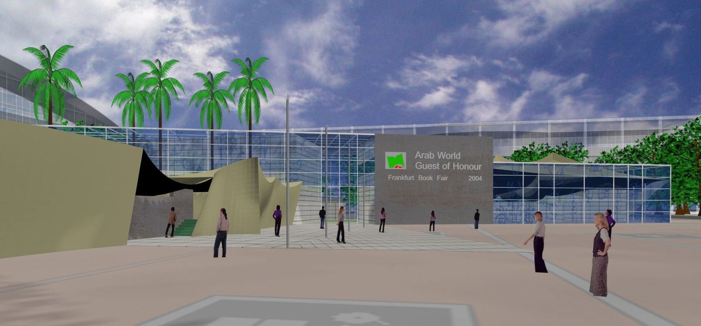

Arab World Participation Galleries, Frankfurt Book Fair
Advisory project · Frankfurt, Germany
Design of the Arab World participation galleries at the Frankfurt Book Fair in Germany, for the Arab League and Ministry of Culture. The team that won first prize in the international competition included Prof. Dr. Amr Attia.
Frankfurt Book Fair: The five-day annual event in mid-October is held at the Frankfurt Trade Fair grounds in Frankfurt am Main, Germany. Source
Partners
PUD
Client
Arab League / Ministry of Culture